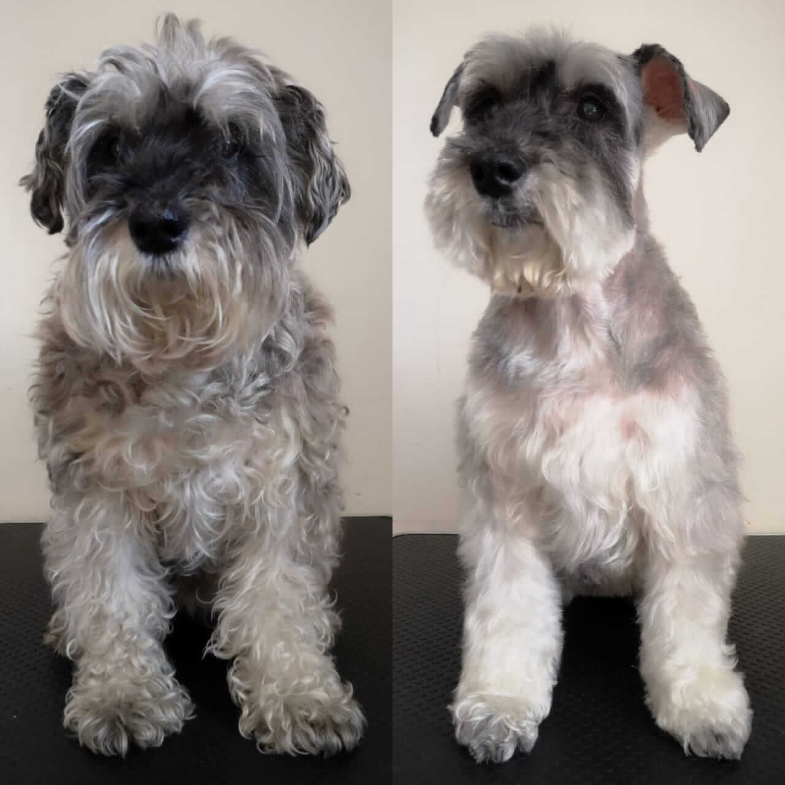
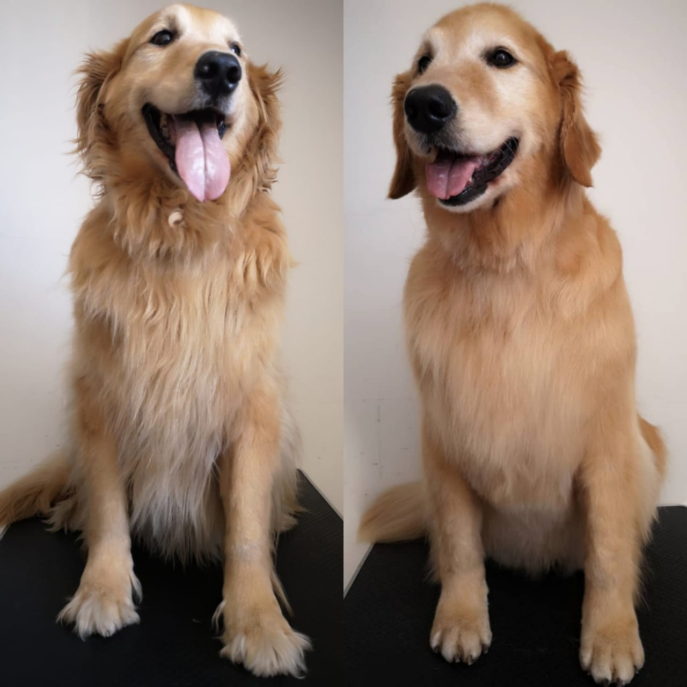
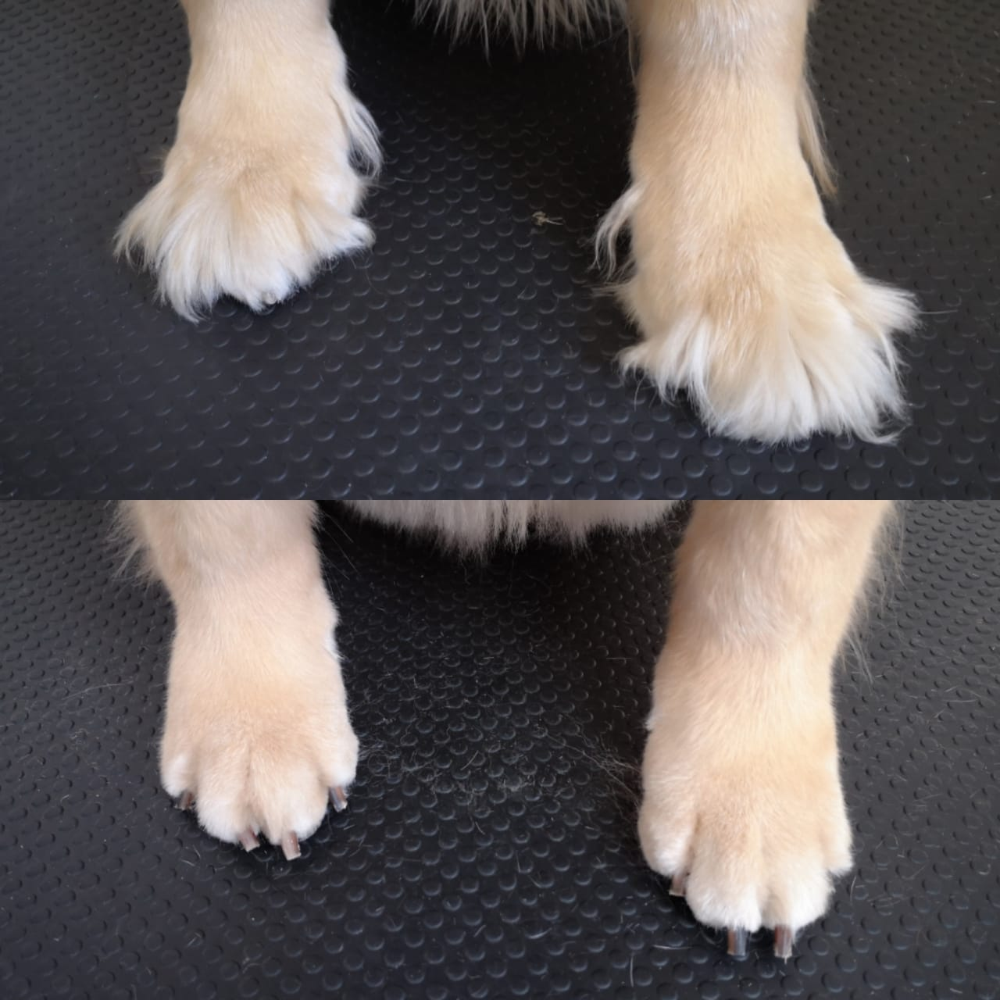
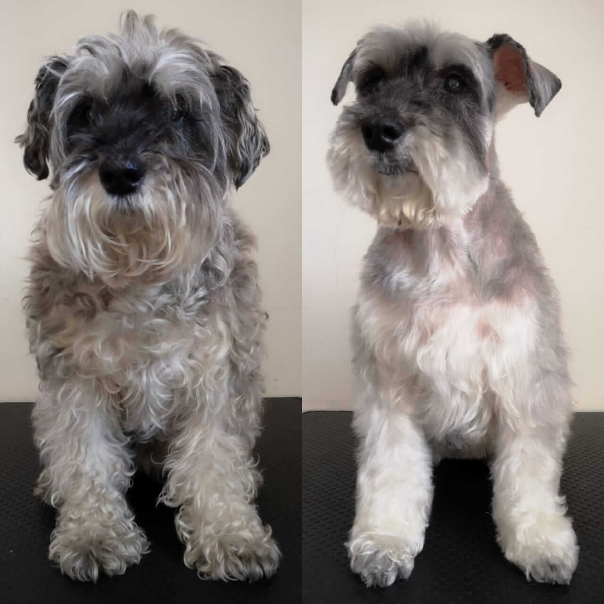
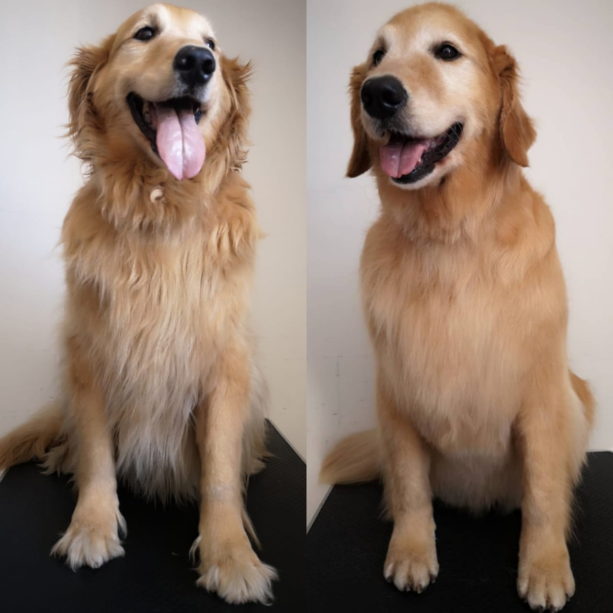
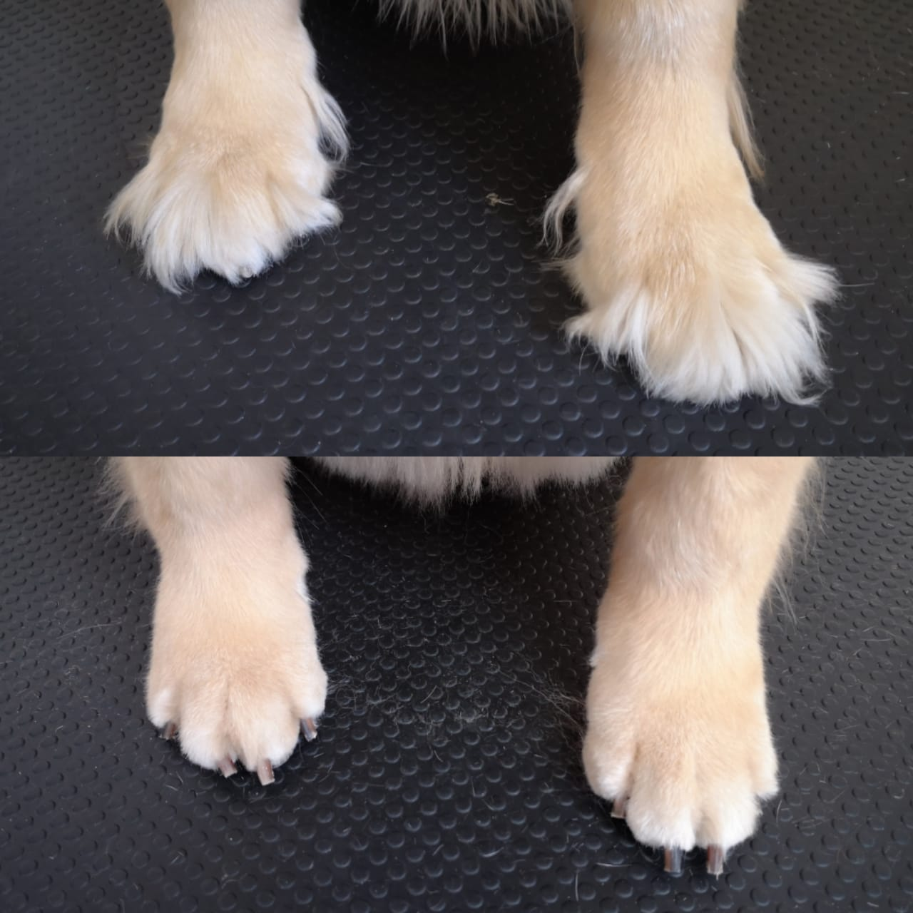

Groomig canino es un conjunto de técnicas de peluquería canina usadas para mantener en buen estado su manto (pelo) que garantiza el bienestar higiénico y saludable del mismo, dando un estilo de acorde a su raza. Incluye baño, cepillado, corte de pelo, uñas y limpieza de oídos. Experiencia que puede ser en algunas oportunidades desagradable para su ejemplar al no ser realizadas por profesionales formados en este arte que además debe incluir la comprensión y buen trato de la mascota. Esta técnica profesional utilizada para perros y gatos de exposición se diferencia del baño habitual que se realiza en la peluquera canina.
 




